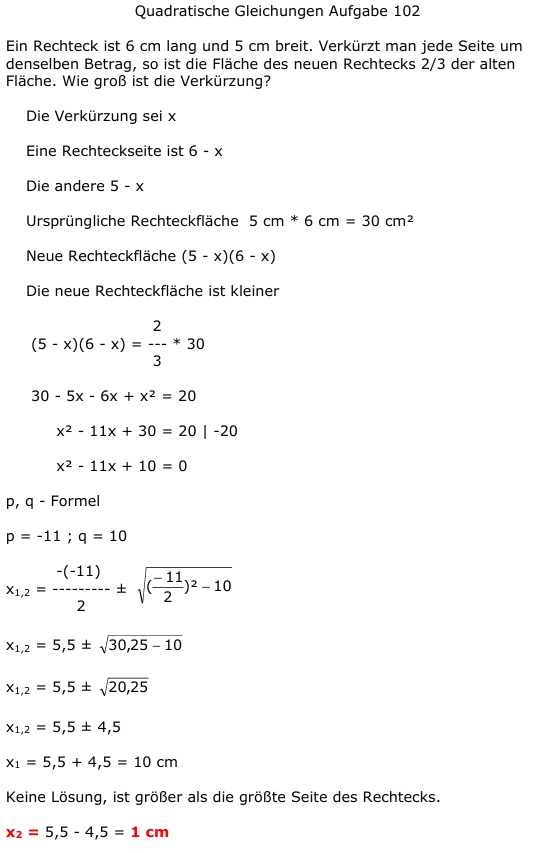

Aufgabe 102 Ein Rechteck ist 6 cm lang und 5 cm breit. Verkürzt man jede Seite um denselben Betrag, so ist die Fläche des neuen Rechtecks 2/3 der alten Fläche. Wie groß ist die Verkürzung? Die Verkürzung sei x Eine Rechteckseite ist 6 - x Die andere 5 - x Ursprüngliche Rechteckfläche 5 cm * 6 cm = 30 cm2 Neue Rechteckfläche (5 - x)(6 - x) Die neue Rechteckfläche ist kleiner 2 (5 - x)(6 - x) = --- * 30 3 30 - 5x - 6x + x2 = 20 x2 - 11x + 30 = 20 | -20 x2 - 11x + 10 = 0 p, q - Formel p = -11 ; q = 10  x1,2 = 5,5 ± 4,5 x1 = 5,5 + 4,5 = 10 cm Keine Lösung, ist größer als die größte Seite des Rechtecks. x2 =5,5 - 4,5 = 1 cm Ist als Lösung plausibel, da sie zwischen 0 und 5 liegen muss.